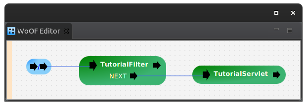

This tutorial demonstrates configuring a Servlet / Filter as a procedure.
Adding Servlets / Filters as a procedure, allows re-use of existing code. Ideally, over time, the Servlets / Filters are simplified to methods taking advantage of OfficeFloor's IoCC. However, Servlets / Filters are supported as procedures to avoid significant rewrites of your application code. This enables taking advantage of OfficeFloor's features with existing code.
The Servlet to be integrated as a procedure, is as follows:
public class TutorialServlet extends HttpServlet {
@Inject
private InjectedDependency dependency;
@Override
protected void doGet(HttpServletRequest req, HttpServletResponse resp) throws ServletException, IOException {
resp.getWriter().write("SERVLET " + this.dependency.getMessage());
}
}
The Filter is as follows:
public class TutorialFilter extends HttpFilter {
@Dependency
private InjectedDependency dependency;
@Override
protected void doFilter(HttpServletRequest request, HttpServletResponse response, FilterChain chain)
throws IOException, ServletException {
// Determine if filter
String isFilter = request.getParameter("filter");
if (Boolean.parseBoolean(isFilter)) {
// Provide filter response
response.getWriter().write("FILTER " + this.dependency.getMessage());
} else {
// Carry on filter chain
chain.doFilter(request, response);
}
}
}
To configure a Servlet / Filter as a procedure, add the following dependency:
<dependency> <groupId>net.officefloor.jee</groupId> <artifactId>officeservlet</artifactId> </dependency>
Once added, select the Servlet / Filter as a class when adding a procedure. The tutorial configuration is as follows:
The dependency is a simple object:
public class InjectedDependency {
public String getMessage() {
return "WITH DEPENDENCY";
}
}
Configured via OfficeFloor as follows:
<objects> <managed-object class="net.officefloor.tutorial.servlethttpserver.InjectedDependency" /> </objects>
The following test confirms the integration of the Servlet and Filter as procedures:
@RegisterExtension
public final MockWoofServerExtension server = new MockWoofServerExtension();
@Test
public void filterResponse() {
MockWoofResponse response = this.server.send(MockWoofServer.mockRequest("/?filter=true"));
response.assertResponse(200, "FILTER WITH DEPENDENCY");
}
@Test
public void servletResponse() {
MockWoofResponse response = this.server.send(MockWoofServer.mockRequest("/"));
response.assertResponse(200, "SERVLET WITH DEPENDENCY");
}
The next tutorial covers migrating Servlets / Filters for simpler code and avoid the dependency on JEE.